Utilizando o Labs no PC
Este guia tem o objetivo de auxiliar a utilização do Ambia Labs na plataforma PC. O guia é primariamente destinado à professores e coordenadores de instituições de ensino.
Requisitos Técnicos
OS: Microsoft Windows 7 Processador: Intel Core i5-3570K ou equivalente Memória: 8 GB RAM Gráficos: Nvidia GTX 970 ou equivalente DirectX: Versão 11 Armazenamento: 2 GB Espaço disponível
Guia de Utilização
- Login
Digite seu login e senha para entrar.
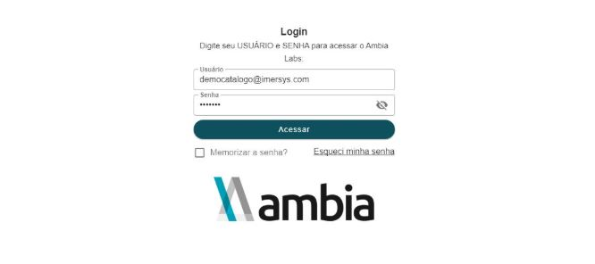
- Movimentação da câmera
Segure o botão esquerdo do mouse e arraste para rotacionar a câmera.
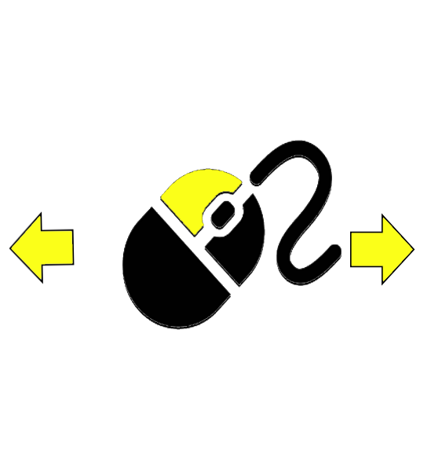
Gire a roda do mouse para afastar ou aproximar a câmera.
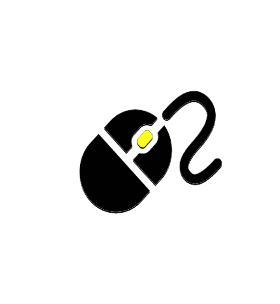
Segure o botão do meio do mouse e arraste para movimentar a câmera.
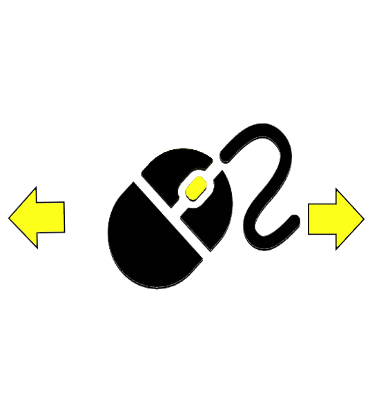
- Interação no ambiente virtual
Quando o cursor estiver sobre um órgão segure o botão direito do mouse e arraste para mover o órgão de lugar.

- Menu
Arraste seu cursor para qualquer aba para ver do que se trata.
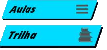
Clique em qualquer uma delas para ver mais opções
- Aba de Aulas
Em aulas você poderá selecionar a aula virtual que você deseja visualizar em uma caixa de seleção.
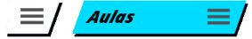
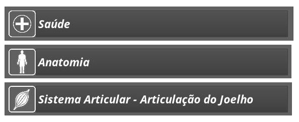
- Aba de Ferramentas

Em Ferramentas, você poderá usar ferramentas para interagir na sua aula virtual. Em uma aula, arraste o mouse para Ferramentas e clique com o botão esquerdo.
Você encontrará ferramentas diferentes para cada aula. As mais comuns na parte de saúde são: Posição; Pele; Animação; Anotações; Secção Vertical, Horizontal e Transversal.
Em Posição, é possível trocar a posição do corpo para em pé ou deitado.
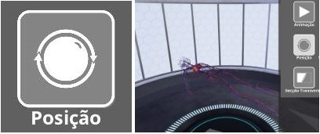
Em Pele, é possível deixar a pele do corpo completamente invisível para melhor visualizar o que está dentro.
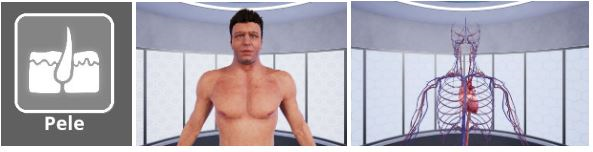
Em Animações, é possível ver o corpo realizando um movimento pertinente para a aula em questão.
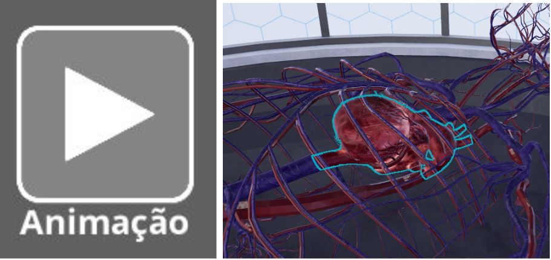
Com as anotações é possível ver rótulos e descrições relevantes para aula dentro do ambiente 3d. Basta clicar em qualquer um dos botões brancos encontrados no coração.
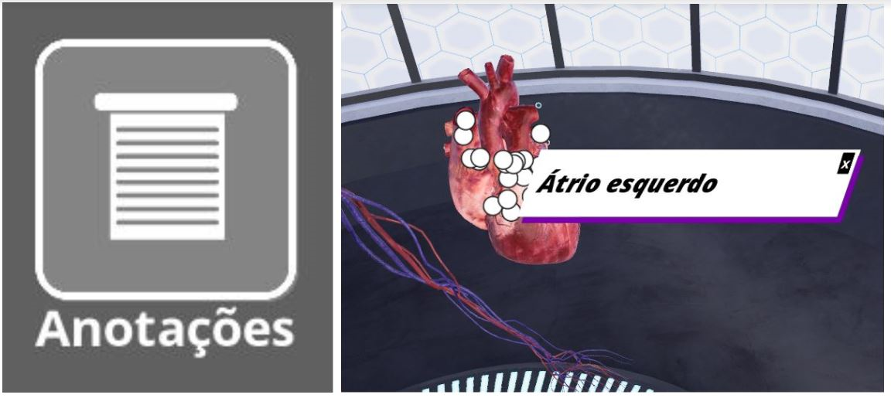
Com Secção Vertical, Horizontal e Transversal é possível o que há dentro do corpo com um corte da orientação escolhida.
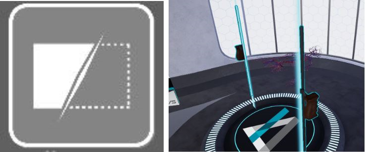
- Aba Trilha
Na aba Trilha, é possível acompanhar sobre a aula específica. Arraste o mouse para trilha e clique com o botão esquerdo para ver uma caixa de diálogo com etapas para acompanhar.
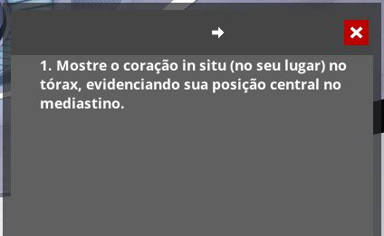
- Aba Conteúdo
A aba Conteúdo serve para ajudar a se organizar no ambiente virtual. Arraste o mouse e clique na em conteúdo para ver um menu hierárquico.
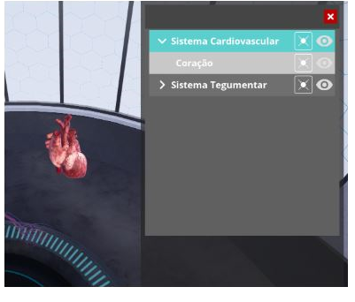 Selecione o nome da parte do corpo para centralizar a câmera nela.
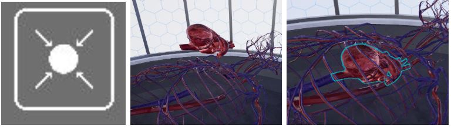 Selecione o ícone da esquerda para trazer a parte do corpo de volta para sua posição original.
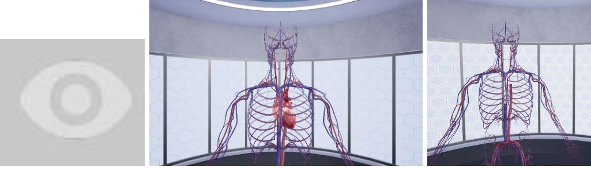
Selecione o ícone da direita para deixar o órgão invisível.
- Aba de Configurações
Selecione o botão com esse ícone para configurar o som no programa.
- Aba Tutorial
Selecione o botão com esse ícone para iniciar o tutorial.
Clique na mensagem de Bem Vindo no meio da tela.
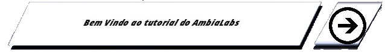
- Aba Sair
Arraste o mouse para o ícone vermelho e selecione sim se deseja sair.
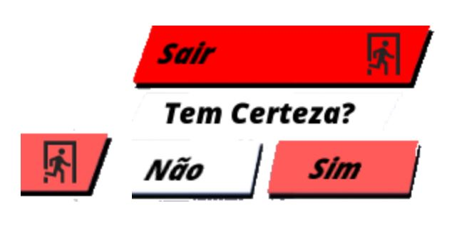